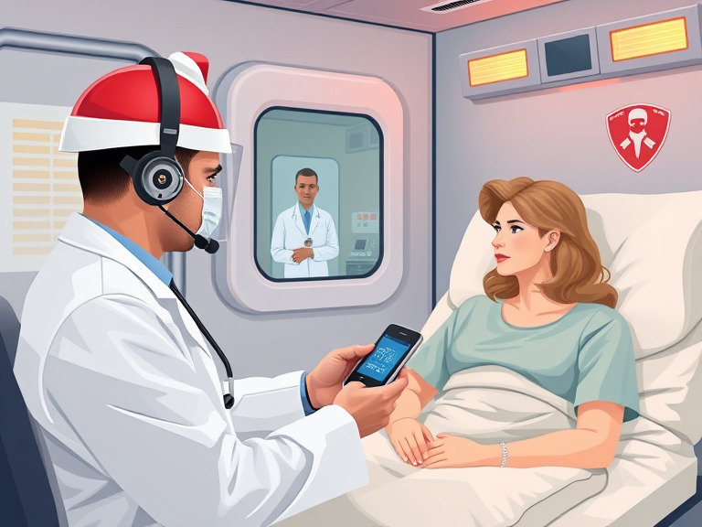

Telehealth Care Cost Savings Model: Part One
Model Overview
The ETHAN system "uses telehealth-based consultations between 911 patients and EMS physicians, to evaluate and triage the necessity for patient transport to a hospital emergency department." [1] The model utilizes the formulaic cost savings provided in the study and the total emergency department visits in select states across the U.S. (that do not end in hospital admissions) to calculate the total provider and patient cost savings.
Total emergency department visits were sourced from the Healthcare Utilization’s State Emergency Department Database (SEDD) database developed for the Healthcare Cost Utilization Project (HCUP), through a Federal-State-Industry partnership, sponsored by the Agency for Healthcare Research and Quality (AHRQ)—the federal department responsible for improving the quality of America's health-care system, through access to health-related research and data.
Methodology
A. Study Results: The model successfully simulates the 2024 cost savings across HCUP member states in the U.S.. The 2016 study uses a case-control method that compares the costs of telehealth evaluated EMS patients to similar characteristic patients, who did not receive telehealth interventions.
B. Patient Savings: The 2016 study indicates a 6.7% absolute reduction in hospital ED visits and $357,200 in annual emergency department visits cost savings. This was calculated by multiplying the reduction in study participants by the primary care emergency department costs (PCRED) for the state of Texas (Figure 1).
Figure 1
Applying this reduction to 2021, patient cost savings were determined using total 2021 HCUP emergency department visits (per state) and regional PCRED costs. [The year 2021 was chosen due to being the last known availability of publicly accessible PCRED costs.] I utilized the multiseries covariate forecasting method in Python to provide an estimate for absent Nevada 2021 visits.
Bi. Multiseries recursive forecasting is used to capture underlying trends impacting states across the U.S., along with annual trends in each state. 11 year emergency department visits for the 31 select states are split between "test" (2009-12-31 to 2020-12-31) and "training" (2021-01-01 to 2021-12-31) datasets (Figure 3).
Figure 2

The recursive forecasting method "LightGBM" is used to train the model. A lag of 1 ensures the model uses the most recent year's predicted value, as input for the following year, to capture short-term trends resulting from changes in insurance provider policies, federal healthcare spending, or health outbreaks such as Covid19. A short rolling window ensures that the model does not annually smooth out short-term fluctuations (Figure 3).
Figure 3

The model yields 985,809 predicted emergency visits for Nevada in 2021, with a 95% confidence that the true emergency department visits lie between 849,600 and 1,022,703.
C. Provider Savings: Provider savings was calculated from the study's per visit cost savings of $103. The model then calculates the predicted cost savings across the 31 HCUP states using the real price parity index (RPP), using the state of Texas as the base. The previously forecasted state Emergency Department visits are then used to determine 2024 provider savings, using the compounded annual healthcare inflation rate from 2021 to 2024.
D. Combined Cost Savings is calculated as the total patient and provider cost savings for the community (Figure 4).